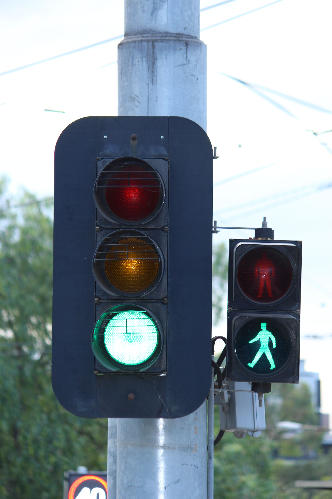
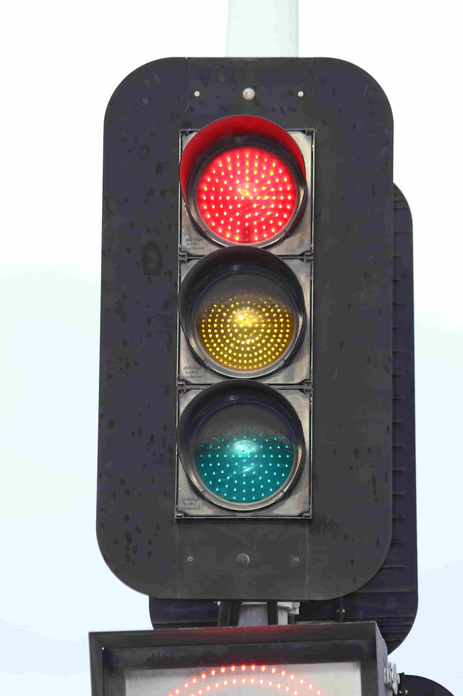
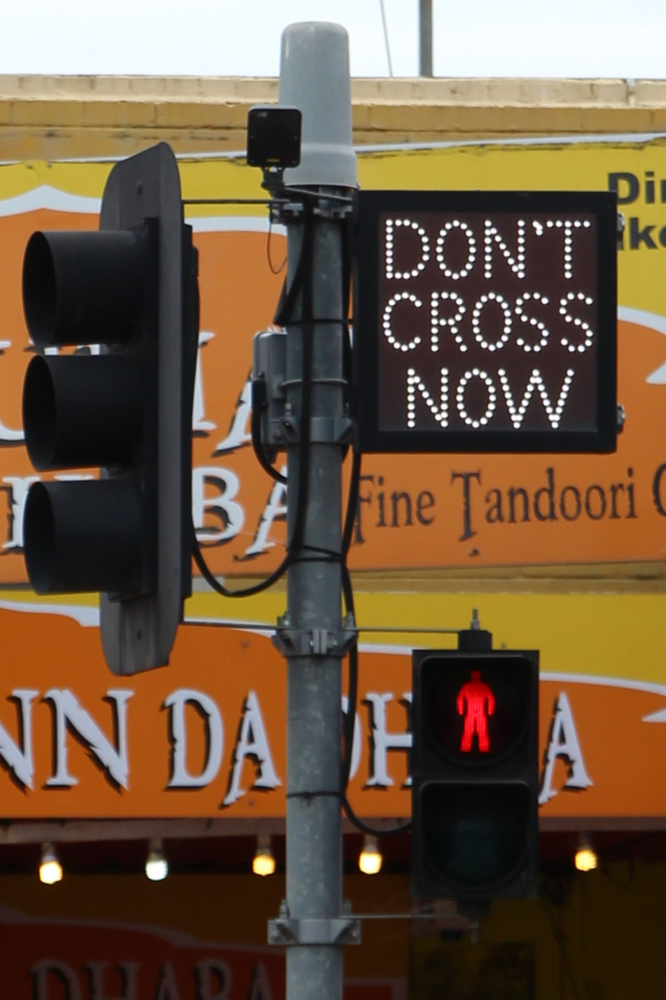
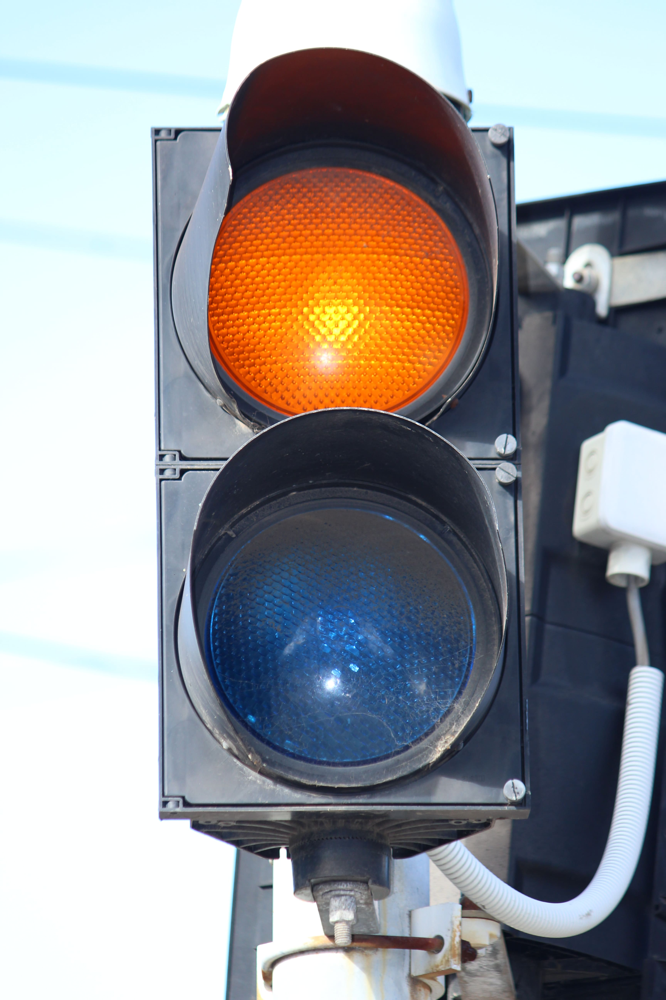
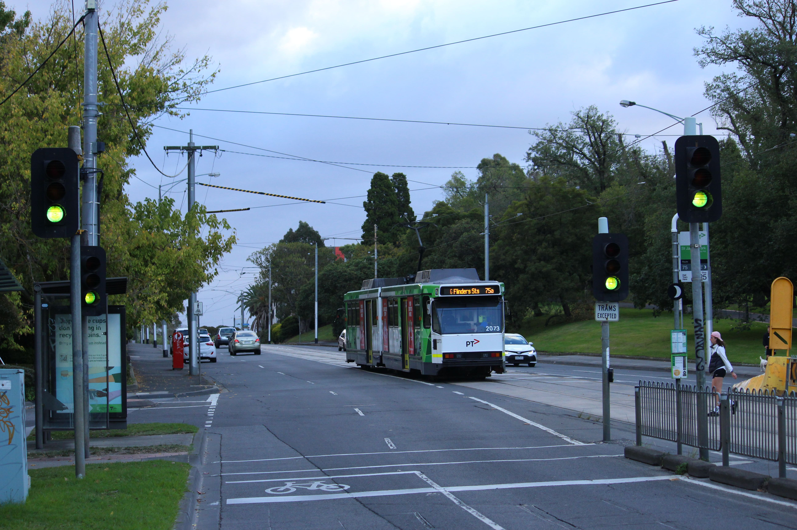

A collection of known Aldridge traffic light variants in Australia, mainly Victoria.
Last updated: 25th of August, 2025
Page created by pengo34789.

Late 70's/80's ATS halogen signals - Yarra St/Burwood Rd, Hawthorn, VIC
| Incandescent/Halogen Signals  |
LED Signals  |
LED Signs (not finished)  |
|---|---|---|
| Other equipment (not finished) |
Interesting Signals  |
Documentation (not finished) |
25/08/2025: Created the Interesting Signals page.
29/07/2025: Added new Google Streetview images to the Aldridge Group 8" incan page.